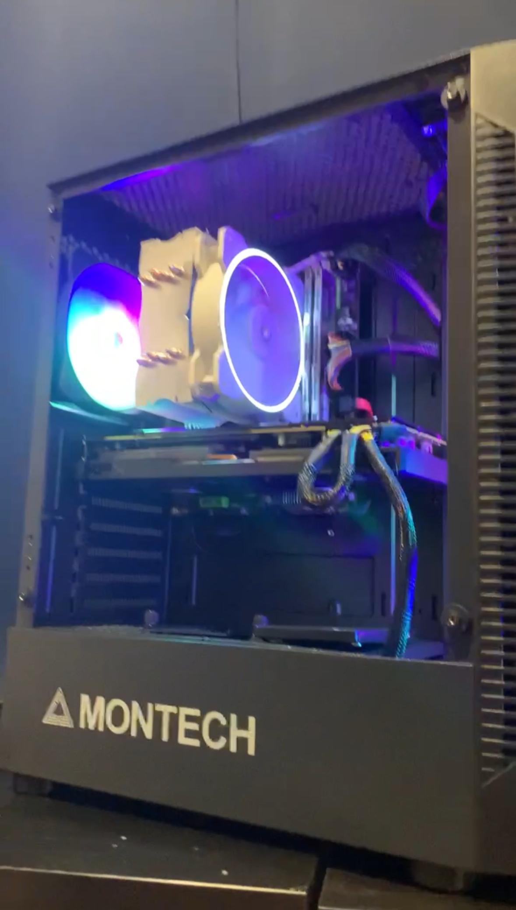

Job Experience
I have accumulated valuable experience over two and a half years at Kroger. Initially working as an e-commerce clerk for a year and a half, I utilized various devices to locate ordered items and ensure timely delivery to customers efficiently. Subsequently, I transitioned to the role of a dairy clerk, where I was responsible for stocking shelves and regularly rotating stock to maintain product freshness.
Skills
I have skills and classroom experience in programming languages like Python, SQL, Oracle PL/SQL, and Visual Studio Code.
I possess hands-on experience in computer networking, including working with equipment, switches, and routers.
I have used Cisco Packet Tracer to build virtual networks. I have utilized my computer hardware skills to build a PC for personal use.
My strong multi-tasking abilities and customer service skills make me an asset in any technical environment.
